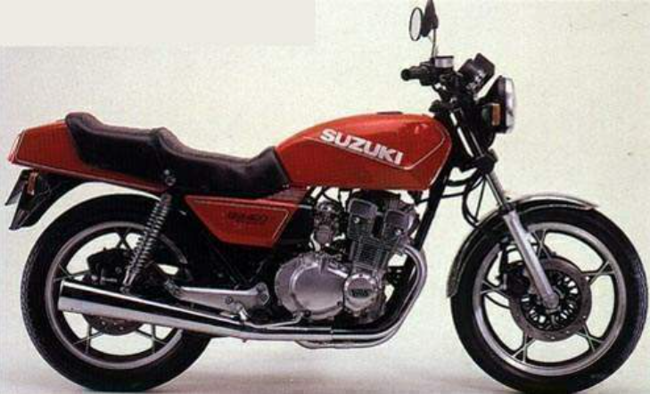

When I left school I tried at all the usual suspects for an apprenticeship, Ford, Sony, Hawker Siddley etc. but as a very shy, introverted 16 year old I didn’t get very far.
One day when my father and I were in Cardiff and he suggested a trying for career in the army so we called into the army careers office, I signed up and went to Sutton Coldfield for an assessment a couple of weeks later, the assessment was a series of aptitude , fitness and IQ tests.
Apparently I did well and I came second overall from that days candidates and so was given a choice of what I wanted to do.
As far as a career was concerned I had always this idea that I wanted to be an electrician so I signed up as an apprentice electrician with the Corps of Royal Engineers based for the first 2 and a half years in Chepstow and started there on September 15th 1981.

I think that this was probably the best time of my life, I made some great mates, some of who I am still in touch with, a good example of Army friends would be Frank, we hadn’t spoken to each other face to face since these days. Some banter on Facebook but never in the same room together. Anyway some 40 years later I was working in Franks hometown, I messaged him to see if I could call round and of course he said yes. I walked through his door, he introduced me to his wife and we just carried on with the last conversation we had in Chepstow it was as as though the last 40 years had never existed.


During my time in Chepstow I owned a Suzuki TS100 and a Yamaha SR250
Same thing with Danny Bear and Mo at our reunion in 2021, sadly Danny passed away unexpectedly the following year, he would have been 56, still just a sprog.

Most of our time in Chepstow was taken up with running! Running carrying heavy things. Running down the stairs to pick up the contents of my bedspace that had been thrown through the window because it wasn’t folded properly. Running to lessons. Running around the Brecon Beacons and Dartmoor. Running around Brecon again because we didn’t run fast enough the first time. I loved it.

To occupy our minds we were required to choose two hobbies to pursue during the week. I chose swimming and cycling, but only really bothered with swimming. I represented the college on a number of occasions and was E Company team captain for my final year there. We used to go to the triangular games for competitions, these were as the name suggests between three teams, the Army, the Navy and the Air force, we would pile onto an old army bus and travel to their barracks for the games.


And so it was off to Germany.
16 Field Squadron, 25 Engineer Regiment, Roberts Barracks, Osnabruck BFPO 36
I have mixed emotions about this place, on one hand it was incredibly boring but on the other it was a great life experience.
Most of the bull from Chepstow and Training Reg. was gone but it still lingered in the background. Parades in the mornings, the occasional run, maybe twice a week now and very rarely room and kit inspections.
I heard a rumour once or twice that alcoholism was a major problem in the army and that it was at its highest in Germany, more specifically, Osnabruck. More specifically Roberts Barracks. More specifically 25 Engineer Regiment…
Most evening the barrack blocks would sing to the sound of drunk squaddies intent on destroying one another and/or their accommodation. Inevitably we would be out on parade the following morning, made to stand in ranks until someone owned up to the damage or got grassed on.
I shared a room with three others, there was Vince, Johhny Priestman and One other who’s name will come back to me one day I’m sure.
Vince is a fellow biker and like me still keeps the dream alive, but again for the life of me I can’t remember what bike he had when we were in Germany. I had my Suzuki GS400.
